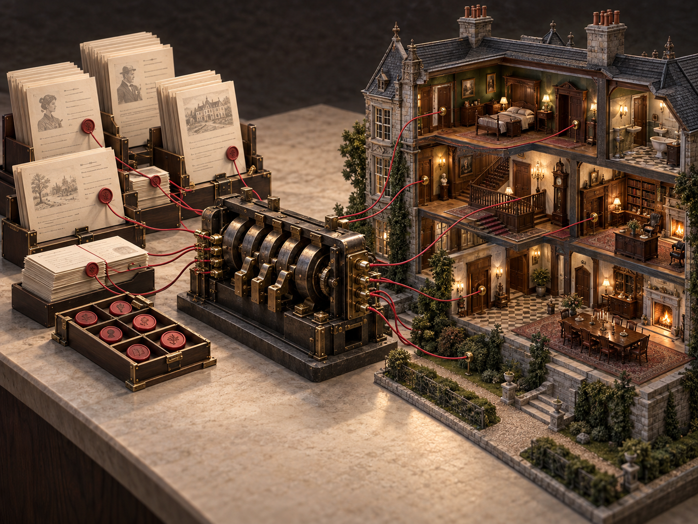
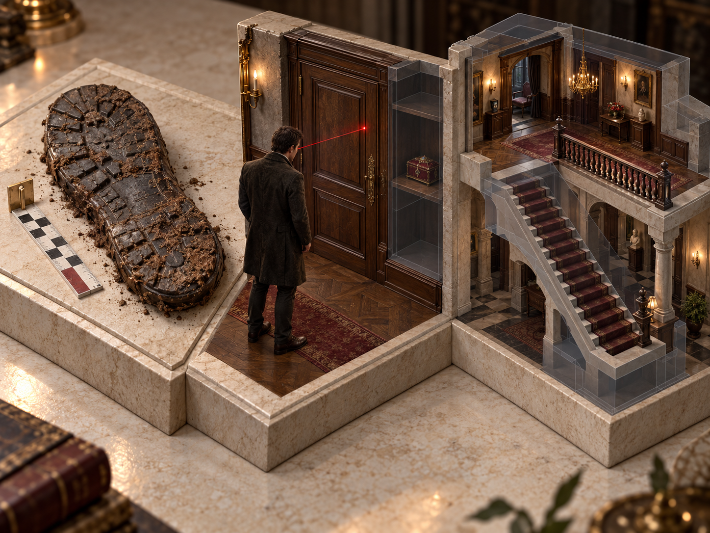
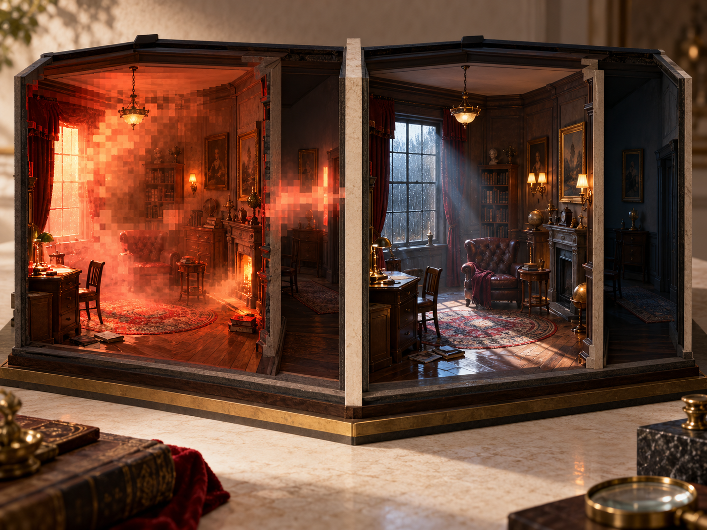
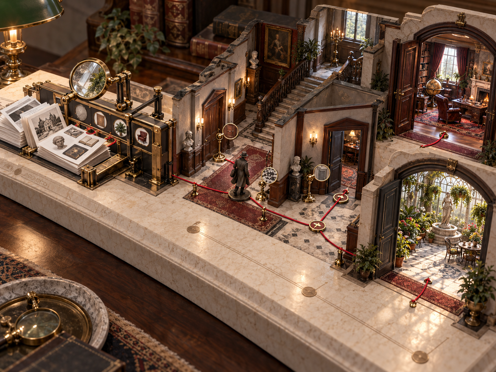
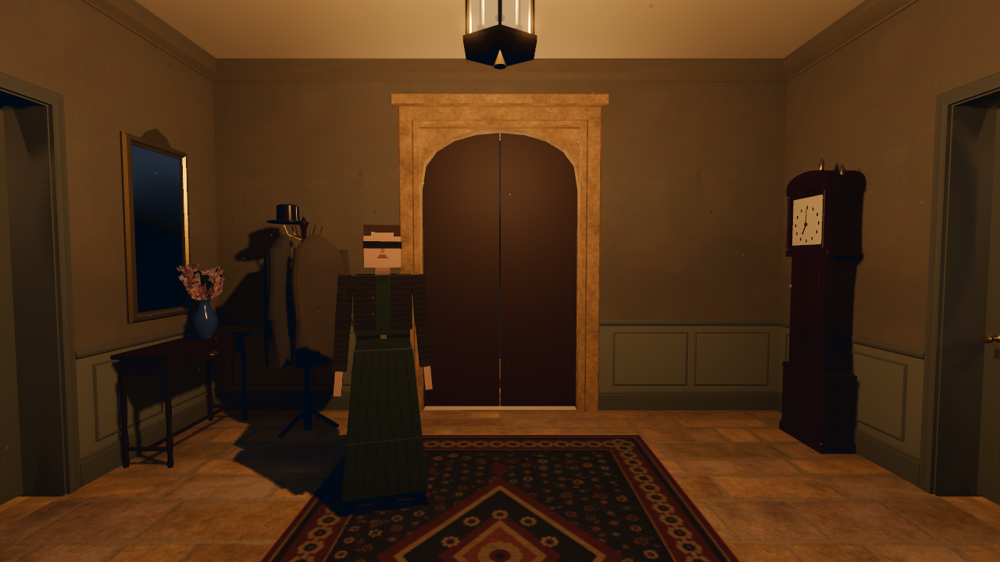
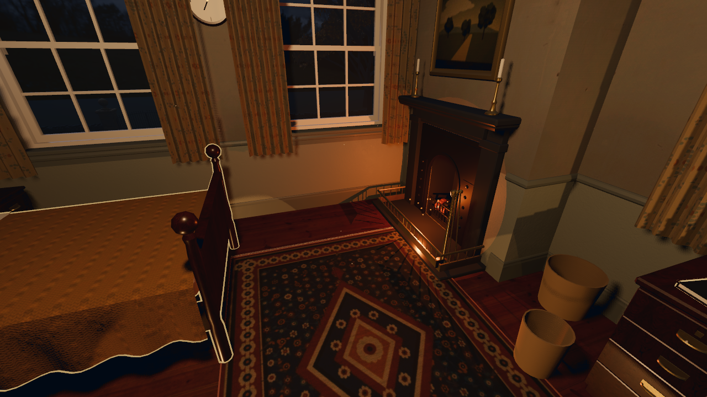
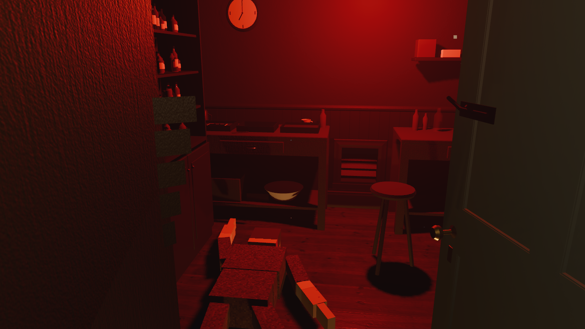
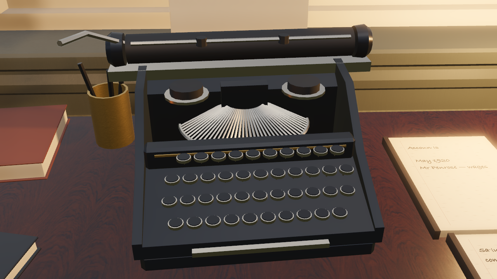
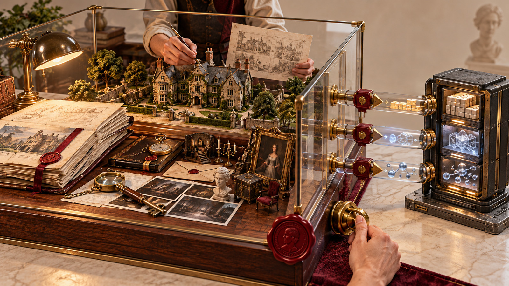
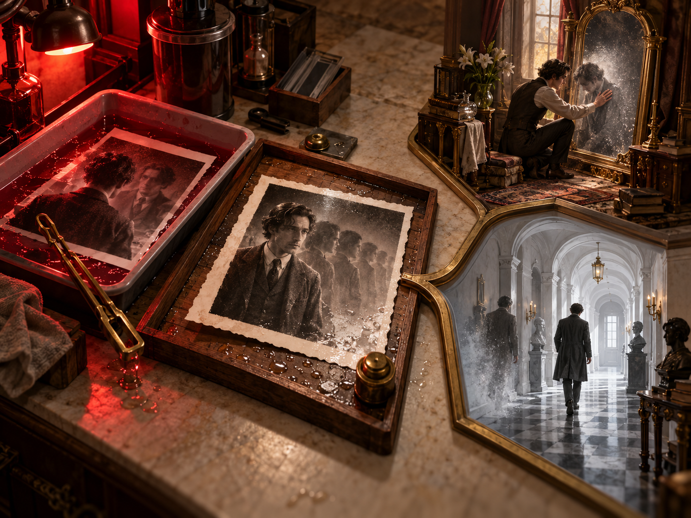

真实问题驱动的四大工程突破
拒绝盲目堆砌工具，每个技术选型均源自开发中遭遇的实际阻碍与 SOP 沉淀
01 · 流程自动化
数据驱动与漫步
灰盒拼装易失序，切镜会削弱空间漫步感。将 87 个机位与剧情逻辑表驱动，建筑仍由场景承载。
SOP：逻辑全入表 · 空间进 TSCN
02 · 空间算法
1:1 检视与防穿模
物证缩放失真、隔柜可检视、楼梯会悬空。以原生尺度装配、视线遮挡判定和邻模块规则解决。
SOP：3D 建模与防穿模规范
03 · 性能调优
弃 VoxelGI 锁 60 帧
VoxelGI 在轻薄本降至 20 FPS 且发热，SDFGI 又有薄墙漏光。改用 Forward+、SSIL 与自研雨水着色器，稳定 60 FPS。
SOP：统一天光与 Shader 资产库
04 · 自动化闭环
全量无头 CI 流水线
多分支推理容易漏测，角色曾卡在楼梯踢面。静态零错误门禁、无头双结局通关与房间巡检形成回归闭环。
SOP：自动化防回归门禁机制
数据驱动管线与“空间不进表”架构
解耦叙事逻辑与空间渲染，让剧情机位变动秒级生效，杜绝二进制资产冲突
痛点排查：代码生成空间的失序
早期曾尝试在 CSV 中记录 3D 坐标并用代码动态拼装房间，导致场景比例失调、采光僵硬，艺术表现力完全丧失。
架构决策：“空间不进表”铁律
核心红线
空间进场景：庄园建筑、手绘材质与物理碰撞严格由 Blender / Godot
逻辑全入表：镜头
.tscn 场景承载。逻辑全入表：镜头
shots.csv、任务 quests.csv 与门锁 doors.csv 由纯文本表格驱动。
实机效益：87 个机位与大地图漫步
导演镜头与对话逻辑解耦，策划修改剧本与机位无需重新打包，状态机白名单执行器秒级热重载。

物证微观检视算法与 3D 建模规范
攻克 1:1 探案尺度失真、柜门穿模检视与楼梯悬空事故，固化为可复用的工业级 SOP
攻坚 A：1:1 原生装配杜绝形变
常规探案 UI 强制缩放会导致皮鞋与案发泥印的 1:1 比对失效。自研
asset_fit=native 原生尺度装配，在 180 个旋转方向检测鞋底宽度与 0.8mm 倒角，杜绝微观物证拉伸。
攻坚 B：防穿透遮挡判定算法
解决隔着紧闭柜门或墙体能触发检视的问题。研发
inspection_surface_for 视线射线遮挡判定，严格限制 0.025m 装配误差，并为狭窄家具增设 2.4—2.7m 动态交互补偿。
事故 C：《3D 建模工作流 SOP》
规范固化
门厅拆解引发主楼梯悬空事故后，确立“视线所及必带邻模块（`邻·门厅`）”铁律；网格严格遵循
-col（三维凸包）与 -colonly 命名，杜绝穿模与掉入虚空。

图形渲染抉择：果断弃用高耗能 VoxelGI
在轻薄设备上实现稳定 60 FPS 与 1920 年代电影胶片质感的技术转向
实测踩坑：VoxelGI 帧率雪崩与薄壁漏光
早期追求全动态间接光实测 VoxelGI，轻薄本（M4 芯片）帧率瞬降 20 FPS 且剧烈发热；而 SDFGI 在庄园薄木板墙体频现大面积漏光穿帮。
技术转向：Forward+ 实用光源群 + SSIL
稳锁 60 FPS
果断弃用 VoxelGI。每间房设置一盏主投射窗光 + 暖色灯具发光体 + 不投射阴影的高效补光点，辅以屏幕空间间接光（SSIL），达成同等通透感且稳稳锁死 60 帧。
自研着色器群与全庄园统一天光
自研
rain_glass.gdshader（流淌雨水折射替代昂贵粒子）与 light_shaft.gdshader（半透明加色圆锥模拟丁达尔光），搭配 3D LUT 胶片查找表彻底消除跨门色温突变。

早期方案 · VoxelGI / SDFGI
38–42 FPS · 薄壁漏光
终选方案 · Forward+ + SSIL
60 FPS · 实用光源群
全流程无头 CI/CD 自动化回归流水线
从依赖人工漫游排查，演进为秒级无头静态交叉校验与双主线自动通关
痛点排查：人工回归成本高与死锁隐患
多线索网状探案中，微小的数据表改动极易引发深层逻辑死锁；角色移动时曾偶发卡在 18cm 楼梯踢面无法爬坡。
自动化突破：静态校验 + 无头自动通关
100% 自动跑通
构建
validate_content.gd 交叉校验全部表格字段与资源存在性（0 错误门禁）；编写 --autoplay 无头探针，秒级自动跑通双结局主线。
几何巡检：全场景防穿模探针
开发
probe_walk.gd 与 probe_doorway.gd，自动在庄园 15 个房间进行 8—16 向巡检，确保零穿模、零掉落虚空、跨门光影平滑。

第二部：产品语义与成果呈现
聚焦最终交付的游戏作品实体：硬核研发数据大盘、实机视听表现、原创度与哲学思辨
DELIVERABLE 01
研发资产大盘
15 间房、87 个机位、60 件物证、261 项音频与 112 个原生脚本，形成可追溯的工程资产。
全量哈希受控 · 零冗余资产
DELIVERABLE 02
实时实机画廊
门厅、客房、暗房与白色走廊均由引擎实时渲染，全场景稳定 60 FPS，可直接游玩。
Forward+ 60 FPS · 胶片质感
DELIVERABLE 03
独立原创贡献
剧本、Blender 空间建模与引擎架构由学生主导，AI 只辅助底层工作并保留离线兜底。
合规透明 · 原创可追溯
DELIVERABLE 04
叙事双结局升华
暗房成为记忆容器，双重视点结局让玩家在“保护他人”与“不被取代”之间作出判断。
艺术立意 · 人文关怀
游戏研发资产大盘：全景量化仪表盘
基于工程版本库全量扫描的真实研发指标，反映扎实完备的工业化生产体量
15
3D 关卡房间
14 高精 + 2 抽象
87
独立机位镜头
shots.csv 纯文本驱动
60
探案微观物证
1:1 实尺检视
261
定制音频资产
无损音效与环境音
112
原生代码脚本
100% 独立研发
60
稳定实机帧率
全场景锁 60 FPS
工程资产结构分布 (Asset Breakdown)
工程健康度与轻薄本性能指标
CI 静态校验通过率
0 错误门禁
双结局自动通关
0 卡关 · 0 死锁
实机运行帧率
轻薄本全程稳锁
四大核心场景 60 FPS 实时实机画廊
100% 引擎实机实录（非预渲染 CG），展现从 1926 英国古典庄园到超现实意识剥离的影调过渡

01 · 庄园门厅 (Hall)
1926 水银镜、暖光吊灯与主楼梯 · Forward+ 60 FPS

02 · 客房安全屋 (Guest Room)
打字机手记、证据推理画板与窗外冷雨 · Forward+ 60 FPS

03 · 案发反锁密室 (Darkroom)
猩红安全灯低频漫射与显影水槽微光 · Forward+ 60 FPS

04 · 第七章终局 (White Corridor)
多维屏幕映照多重人格，真相剥离 · Forward+ 60 FPS
独立开发原创性与人机协作边界
拒绝商业资产拼凑，核心创意学生自主把控，严格遵守大赛《人工智能使用说明》

01
人主导创作故事、空间、审查决策
02
AI 辅助底层格式转换、测试与样板代码
03
离线可运行不依赖运行时模型
100% 学生自主核心
原创剧本、3D 建模与引擎架构
叙事剧本与文学创作：
纯原创英国古典推理架构（阿加莎《罗杰疑案》叙述者即凶手）+ 赛博多重人格隐喻；全流程台词、九章诗化标题全部自主创作。
纯原创英国古典推理架构（阿加莎《罗杰疑案》叙述者即凶手）+ 赛博多重人格隐喻；全流程台词、九章诗化标题全部自主创作。
Blender 从零手工建模：
庄园 15 间房体结构、建筑外壳及核心探案道具全部在 Blender 中自主建模烘焙，拒绝购买商业整套资产包。
庄园 15 间房体结构、建筑外壳及核心探案道具全部在 Blender 中自主建模烘焙，拒绝购买商业整套资产包。
原生检视与状态机管线：
自主研发
自主研发
actions.gd 执行器与 1:1 实尺物证微观裁切装配系统。
核心设计与审查决策：100% 学生主导
透明合规使用
人机协作的清晰安全边界
定位严格受控于底层助手：
AI 仅用于辅助样板代码生成、自动化格式转换与单元测试脚本编写，严守工具属性，不替代艺术决策。
AI 仅用于辅助样板代码生成、自动化格式转换与单元测试脚本编写，严守工具属性，不替代艺术决策。
离线确定性保障：
游戏设计了完备的预写兜底与词表闸门，彻底脱离网络环境仍可 100% 完整流畅通关，杜绝运行时模型隐式依赖。
游戏设计了完备的预写兜底与词表闸门，彻底脱离网络环境仍可 100% 完整流畅通关，杜绝运行时模型隐式依赖。
全量合入人工把关：
所有代码与资产均经过团队代码审查与 CI 静态 0 错误门禁，确保完全自主掌控。
所有代码与资产均经过团队代码审查与 CI 静态 0 错误门禁，确保完全自主掌控。
可审查 · 可脱机 · 严守学术与比赛诚信
叙事机制破局：构建《少年派》式的双重视点
从“谁是凶手”的解谜套路，走向“我该相信哪一种讲法”的哲学追问
核心隐喻：现实中从未发生真正凶杀
侦探即凶手，死者即记录者。这是一场发生在数字容器内部的“遗忘”与“自我疗愈”。暗房即容器、显影即浮现、定影即留下唯一主体。
终局抉择：打字机上的两种讲法
由玩家裁决
在认出凶手就是自己后，游戏拒绝非黑即白的道德说教：
• “为了保护所有人”：选择相信自我牺牲是为了守护其他衍生人格免遭痛苦的温存。
• “为了不被取代”：选择直面主体为了生存而剥离衍生人格的残酷现实。
• “为了保护所有人”：选择相信自我牺牲是为了守护其他衍生人格免遭痛苦的温存。
• “为了不被取代”：选择直面主体为了生存而剥离衍生人格的残酷现实。

封存 → 显影 → 定影
为了保护所有人为了不被取代